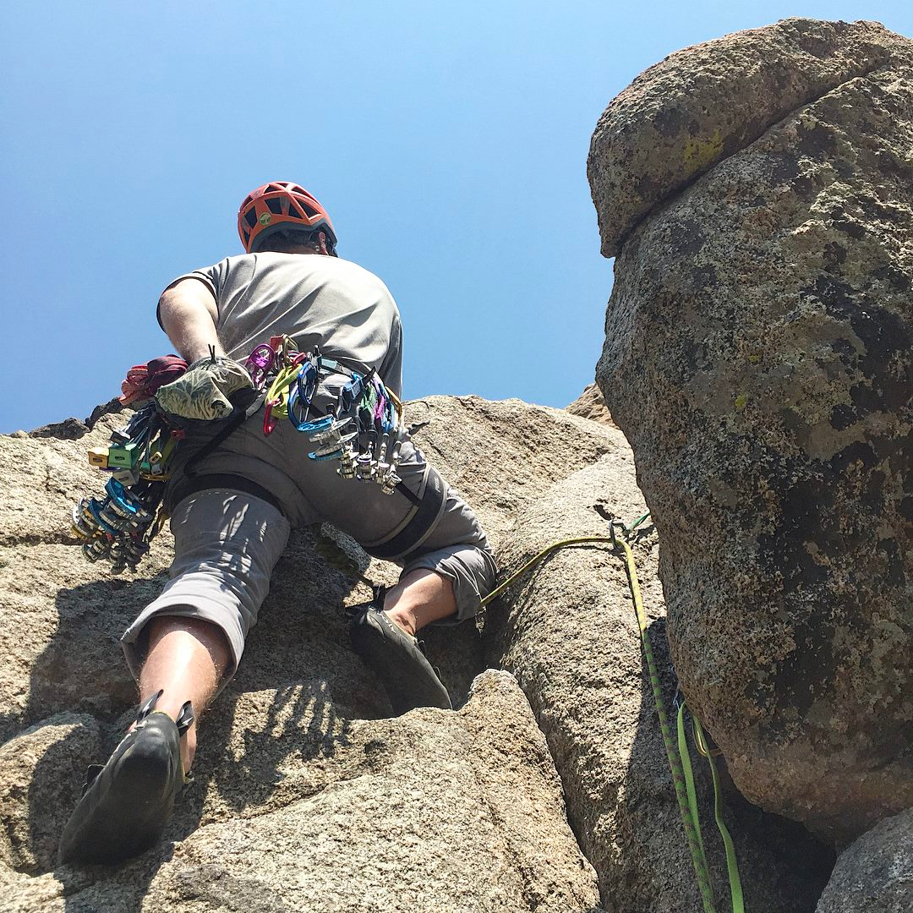
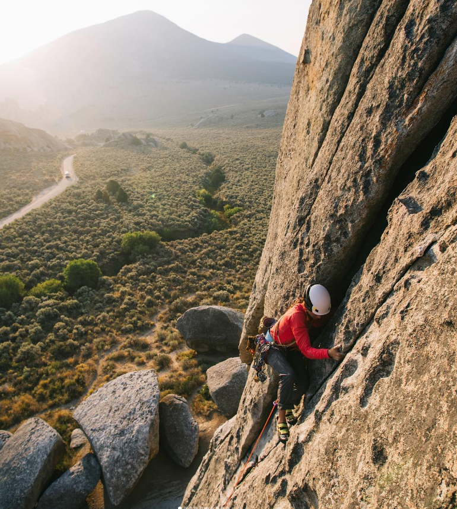
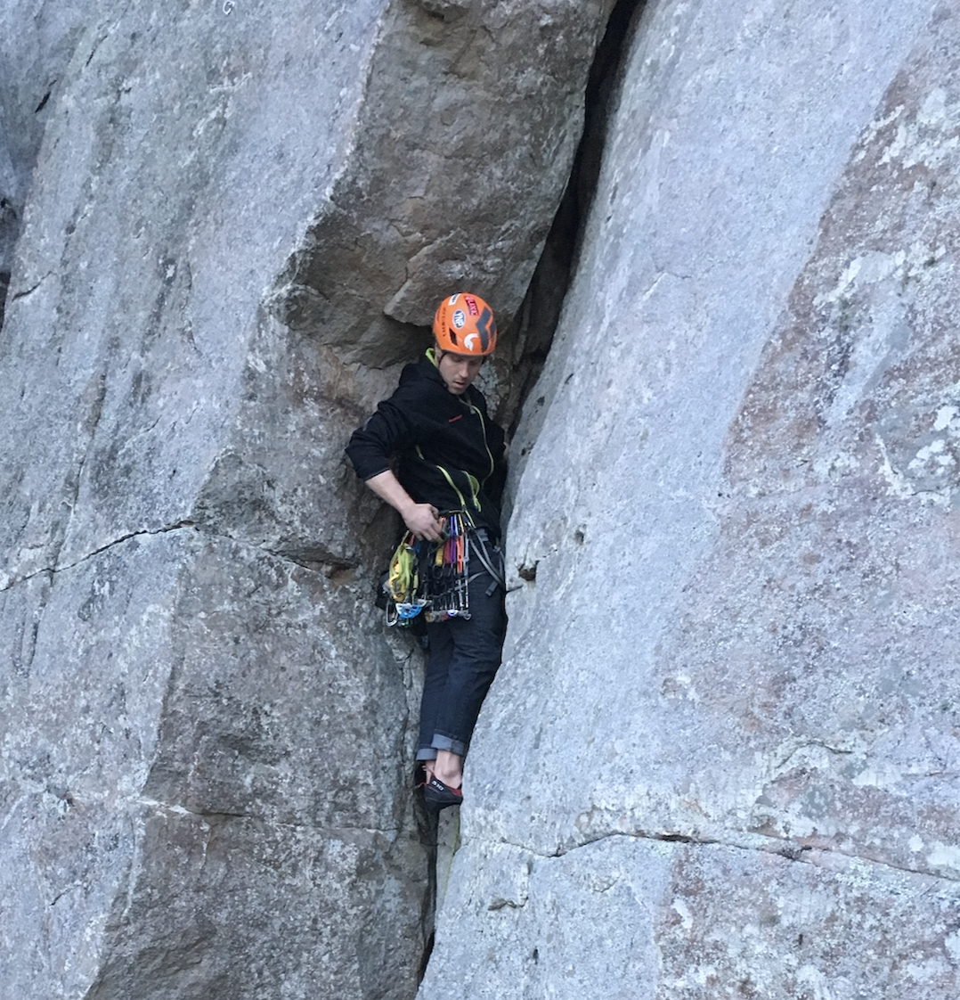

Traditional Climbing
-
Trad climbing, short for traditional climbing, is a form of rock climbing where climbers place removable protection devices as they ascend.
-
Trad climbers use gear such as nuts, cams, and hexes to create anchor points and protect themselves against falls.
-
Unlike sport climbing, where fixed bolts are often used, trad climbers rely on their judgment and placement skills to select appropriate gear placements.
-
Trad climbing offers a unique challenge as climbers must find suitable cracks, fissures, or features in the rock to place protection gear.



Previous | Alpine Climbing